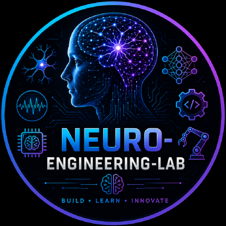

Controls:
Arrow Keys: Move ship (↑ forward, ↓ back, ← left, → right)
Space: Fire / Speed Boost
H: Hyperspace
P: Pause
M: Toggle music
Waves: clear every hostile to call the next wave; a boss joins every third one
R / Enter: Restart after game over
T: Toggle Flight Telemetry HUD
Designed by Dang Hoang, AI/ML Eng.